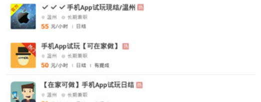
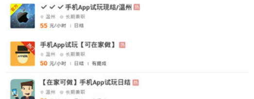

怎么可以不出门，轻松赚钱
你可以选择一些App试用，注册等工作，有手机或电脑就可以轻松搞定，还有一些刷单等工作，这类工作因诈骗较多，不建议新手去做。

金蜂兼职平台的优势是什么？
金蜂兼职平台直接对用户的申请进行审核，为认真完成任务的用户提供工资保障。
我的报名被拒绝了怎么办？

如果对任务审核有异议，可以重新申请哦!
你可以选择一些App试用，注册等工作，有手机或电脑就可以轻松搞定，还有一些刷单等工作，这类工作因诈骗较多，不建议新手去做。
金蜂兼职平台直接对用户的申请进行审核，为认真完成任务的用户提供工资保障。
如果对任务审核有异议，可以重新申请哦!